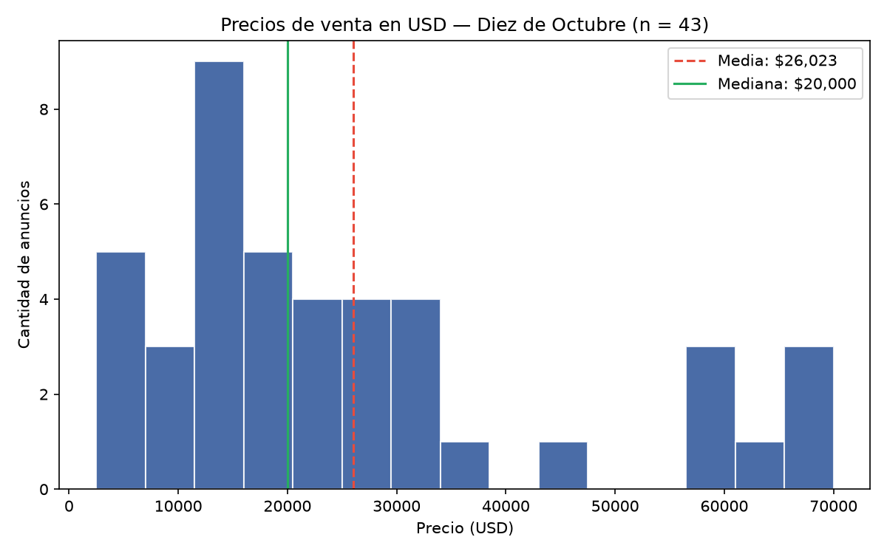
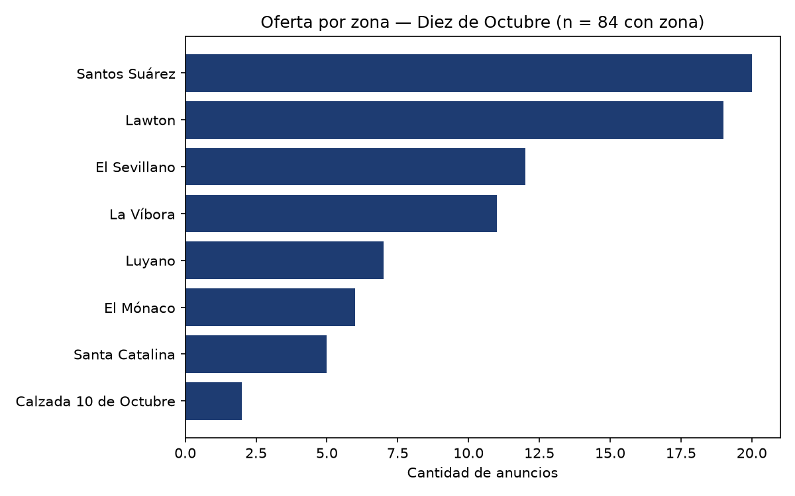
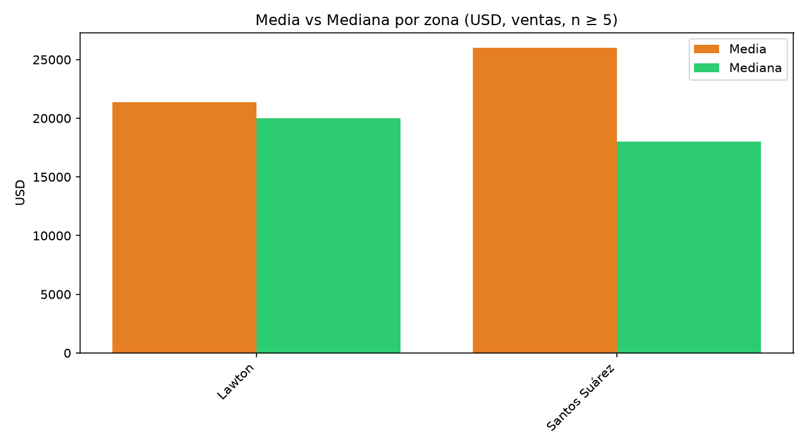
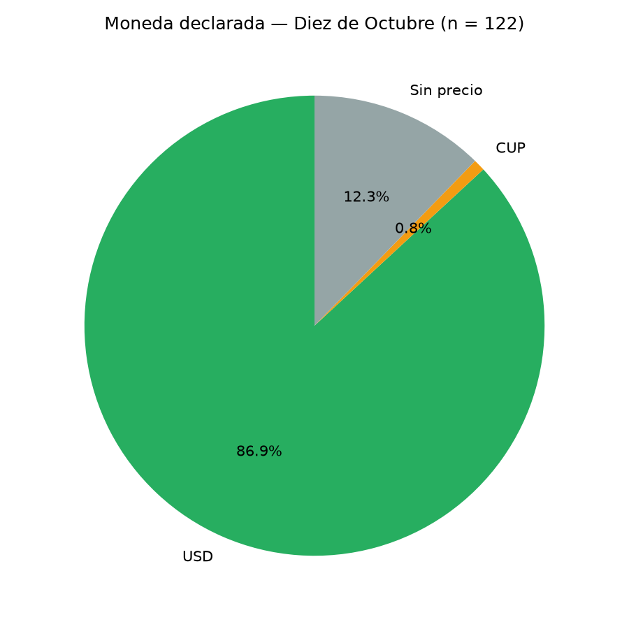
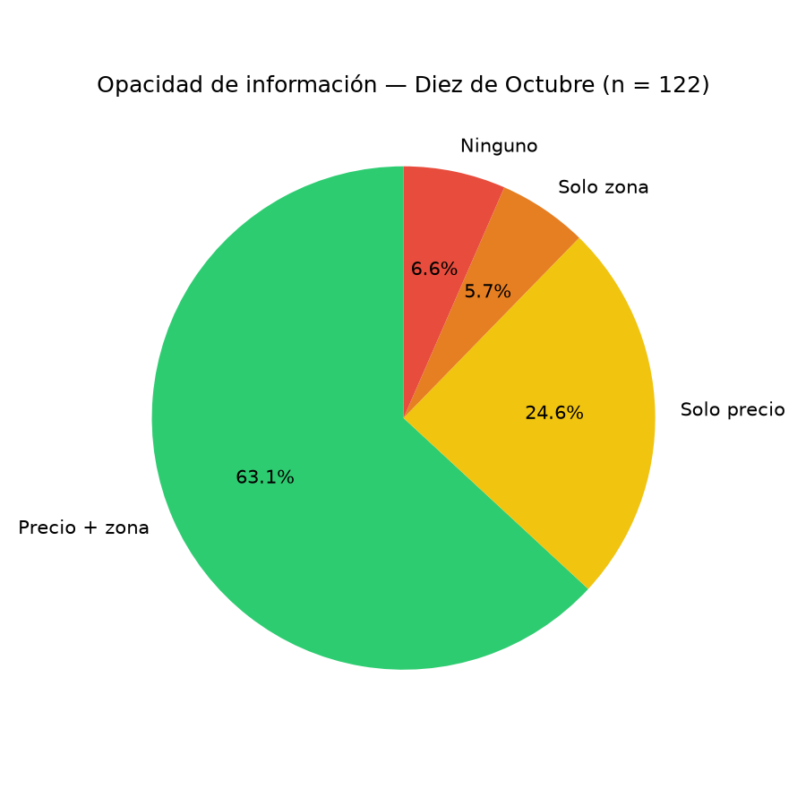

Ciencia de Datos · MATCOM · Universidad de La Habana
Mercado inmobiliario digital en Diez de Octubre
¿Cuánto cuesta comprar? ¿Dónde se publica la oferta? ¿Cuánta información falta? Una lectura sencilla de 122 anuncios reales de Revolico y Facebook, con gráficas que puedes mover, ampliar y explorar.
- 122 publicaciones verificadas
- 5 gráficas interactivas
- 30 preguntas respondidas
Diez de Octubre · La Habana
2026
Mediana de venta
$21,000 USD
La mitad de las ventas se publica por debajo de este precio · n = 42
86.9% de los precios están en USD
67.2% permite cruzar precio y zona
El proyecto en 1 minuto
Qué se estudió y por qué importa
El acceso a la vivienda en La Habana no depende solo del precio. También depende de qué información está publicada, en qué moneda y en qué barrio. Este proyecto mide esas cuatro dimensiones con anuncios reales de Diez de Octubre.
Cómo se llegó a 122
De 176 publicaciones unificadas a 122 confirmadas
El scraper etiquetaba 134 anuncios de Revolico como «Diez de Octubre», pero esa etiqueta no era fiable. Se revisó cada título y se comprobó la ubicación contra el polígono del municipio. Así se excluyeron los anuncios de otros municipios y los que no se podían verificar.
176
publicaciones unificadas
−46 de otro municipio
−8 indeterminadas
−1 fuera del universo
122
confirmadas dentro del municipio
¿Qué pasó con los 55 registros descartados?
No se borraron. Se conservan íntegros, con su motivo, en descartados_diez_octubre.json: 46 con resultado NO (otro municipio), 8 INDETERMINADOS y 1 que ya estaba fuera de la base unificada. Conservarlos permite auditar el cambio de universo.
Las 5 gráficas del proyecto
Toca, arrastra y amplía los datos
Cada tarjeta tiene dos vistas: una gráfica interactiva y la imagen original del repositorio. En la interactiva puedes pasar el mouse para ver los valores, arrastrar para mover y usar la rueda o pellizcar para acercar. Debajo de cada una hay una explicación en lenguaje sencillo.
Precios de venta en dólares
Cómo se reparten los precios que piden los vendedores.

¿Qué muestra?
Cada barra cuenta cuántas ventas se publican en un rango de precio. El eje horizontal es el precio en dólares y el vertical, la cantidad de anuncios.
¿Qué significa?
La mitad de las ventas se pide por debajo de $21,000. El 80% central está entre $6,100 y $60,000. La media sube a $26,357 porque unas pocas propiedades muy caras empujan el promedio hacia arriba.
Dato clave
La mediana es más útil que la media para saber «cuánto cuesta lo típico». Si ves un promedio alto, pregúntate si hay valores extremos.
Cómo explorar
Pasa el mouse por las barras para ver el rango y la cantidad. Usa «Zoom P10–P90» para quedarte con el 80% central. En móvil, pellizca para acercar.
Oferta por barrio
En qué zonas del municipio se publica más vivienda.
Los 4 barrios principales reúnen 69 de 91 publicaciones con zona identificada (75.8%).

¿Qué muestra?
El número de anuncios publicados en cada barrio o reparto. Solo incluye las 91 publicaciones que mencionan una zona; las otras 31 no permiten saber dónde está la vivienda.
¿Qué significa?
La oferta está concentrada: Santos Suárez (26), Lawton (19), La Víbora (12) y El Sevillano (12) reúnen el 75.8% de los anuncios con zona. En el resto de barrios hay muy pocos casos.
Dato clave
Que un barrio tenga más anuncios no significa que sea más caro: solo significa que allí se publica más. Para comparar precios hay que mirar la gráfica 3 y tener en cuenta el tamaño de cada grupo.
Cómo explorar
Pasa el mouse por cada barra para ver el total y su porcentaje. Usa «Solo los 4 principales» para comparar el grupo que concentra la oferta.
Media vs. mediana por barrio
Dos formas de resumir el precio, y por qué no siempre coinciden.
El Mónaco tiene la media más alta ($57,667; n = 6), pero El Sevillano tiene la mediana más alta ($36,000; n = 10). Son grupos pequeños: úsalos como orientación, no como ranking definitivo.

¿Qué muestra?
Para cada barrio con al menos 5 anuncios con precio en USD, compara la media (promedio) con la mediana (el valor que queda justo en el medio si ordenas los precios).
¿Qué significa?
Cuando la media es mucho más alta que la mediana, hay precios extremos que inflan el promedio. La mediana describe mejor el precio típico y es más difícil de distorsionar por una sola vivienda muy cara.
Dato clave
El Mónaco tiene la media más alta ($57,667) con solo 6 anuncios; La Víbora tiene 11 y una media de $49,591. El Sevillano lidera la mediana ($36,000, n = 10). Ningún grupo es grande: las diferencias son descriptivas.
Cómo explorar
Alterna entre «Media», «Mediana» y «Ambas». Pasa el mouse para ver el valor exacto y el número de anuncios (n) de cada barrio.
¿En qué moneda se publica?
Dólares, pesos cubanos y anuncios sin precio.
En todo el universo, 106 de 122 publicaciones están en USD (86.9%); 15 no declaran precio y 1 está en CUP.

¿Qué muestra?
La moneda en la que se declara el precio. «Sin precio» no es una moneda: son anuncios que no permiten saber cuánto cuesta la vivienda.
¿Qué significa?
El mercado publicado funciona casi por completo en dólares. Entre las 107 publicaciones que declaran moneda, 106 son USD (99.1%). El único precio en CUP es un alquiler de 50,000 CUP. Quien solo tiene pesos cubanos encuentra muy pocas opciones comparables.
Dato clave
La dolarización no es solo una convención: cambia quién puede participar. Si el precio está en USD y no tienes acceso a divisas, el anuncio deja de ser una opción real.
Cómo explorar
Cambia entre «Todo el universo» y «Solo con moneda» para ver cómo sube el porcentaje de USD cuando se excluyen los anuncios sin precio. Pasa el mouse por cada porción para ver el porcentaje.
La falta de información (opacidad)
Cuántos anuncios permiten saber precio y zona a la vez.
82 de 122 (67.2%) permiten cruzar precio y zona. 6 (4.9%) no tienen ninguno de los dos datos. La opacidad no es un detalle: limita la capacidad de comparar.

¿Qué muestra?
Cuatro grupos: anuncios con precio y zona, solo con precio, solo con zona, o sin ninguno de los dos. Es una medida de cuánta información falta para comparar.
¿Qué significa?
67.2% permite cruzar precio y zona. Un 25.4% no dice la zona, un 12.3% no dice el precio y un 4.9% no dice ninguna de las dos cosas. Sin esos datos, el comprador tiene que llamar o visitar para poder comparar.
Dato clave
La falta de información no afecta a todos por igual: quien puede llamar y visitar accede a lo que falta; quien depende del anuncio queda en desventaja. Por eso la opacidad es parte del problema social, no solo un defecto técnico.
Cómo explorar
Cambia entre «Dona» y «Barras» para comparar los grupos. Pasa el mouse por cada porción o barra para ver el total y el porcentaje.
Lo que dicen los datos
8 conclusiones en lenguaje sencillo
Cada conclusión indica el tamaño del grupo (n) y el nivel de evidencia del informe. No se trata de generalizar a toda La Habana, sino de describir lo que muestran estos 122 anuncios.
-
1
La base verificada es de 122 publicaciones
83 de Revolico y 39 de Facebook. Se excluyeron 46 de otros municipios, 8 indeterminadas y 1 fuera del universo. Los 55 registros descartados se conservan íntegros con su motivo.
Evidencia sólida · censo del universo -
2
El mercado publicado está dolarizado
106 de 107 publicaciones con moneda declarada están en USD (99.1%); sobre el total, 106 de 122 (86.9%). El único precio en CUP es un alquiler. Esto describe la convención de publicación, no todas las transacciones.
Evidencia sólida · n = 107 -
3
El precio típico es menor que el promedio
La mediana de las ventas en USD es $21,000 y la media $26,357.14. El 80% central está entre $6,100 y $60,000. Unas pocas viviendas muy caras elevan la media: para orientarte, usa la mediana.
Evidencia sólida · n = 42 -
4
El alquiler no tiene precio estimable
Solo hay 3 anuncios de alquiler: 1 declara precio (50,000 CUP) y ninguno lo declara en USD. No se puede calcular una media ni una mediana de alquiler con esta base. La ausencia es el hallazgo.
No estimable · n = 3 -
5
La oferta está concentrada en pocos barrios
Santos Suárez, Lawton, La Víbora y El Sevillano reúnen 69 de las 91 publicaciones con zona (75.8%). Las diferencias de precio entre barrios son descriptivas: los grupos son pequeños (n = 5–23) y los intervalos son amplios.
Evidencia descriptiva · n = 91 -
6
Falta información básica
25.4% no especifica zona, 12.3% no declara precio y 4.9% no dice ninguna de las dos cosas. Solo 67.2% permite cruzar precio y zona. Sin esos datos, comparar exige contactar al vendedor.
Evidencia sólida · n = 122 -
7
La informalidad existe, pero no domina
12 de 122 publicaciones (9.8%) usan lenguaje de oportunidad, permuta o cambio. Las 12 son de Revolico; Facebook no aporta texto suficiente para medir esta dimensión, así que es una cota inferior. «Oportunidad» aparece en 10.
Evidencia descriptiva · n = 12 -
8
El apartamento es la opción más accesible
En ventas en USD, el apartamento tiene media $16,409.09 y mediana $15,000 (n = 11); la casa, media $31,500 y mediana $22,500 (n = 27). La diferencia se mantiene en P10–P90. Son precios de oferta, no de transacción.
Evidencia sólida · n = 38
Cómo se hizo
Método, verificación y preguntas
El proyecto no se apoya en la etiqueta automática del scraper. Verifica cada anuncio, conserva los descartes y reporta la ausencia de datos como un resultado, no como un defecto.
Recopilar
Se unificaron anuncios de Revolico (corte 31/10/2026) y Facebook (captura 04/11/2026). El universo inicial fue de 176 publicaciones.
Verificar
Se usó el título como evidencia principal: si nombra Diez de Octubre o un reparto interno, confirma; si nombra un lugar externo, descarta. Los topónimos se geocodificaron y se comprobó punto-en-polígono contra el GeoJSON municipal.
Clasificar sin imputar
Precio, zona, tipo y operación se toman de los campos declarados. Si faltan, se conservan como ausencia: no se rellenan con ceros, medias ni valores plausibles.
Analizar y controlar
Se responden 30 preguntas en 6 bloques. Un script de control valida 36 cifras contra los datos y 8 pruebas de contrato protegen el universo verificado.
Resultado de la verificación municipal
| Resultado | Revolico (n = 134) | Facebook (n = 42) | Unificado (n = 176) |
|---|---|---|---|
| SÍ, dentro de Diez de Octubre | 83 | 39 | 122 |
| NO, otro municipio | 46 | 0 | 46 |
| INDETERMINADO | 5 | 3 | 8 |
| CONTRADICTORIO | 0 | 0 | 0 |
Además de los 54 descartes del universo unificado (46 + 8), se conserva 1 registro que ya estaba fuera de la base (facebook-27): en total, 55 registros con motivo.
Precios
¿Cuánto cuesta comprar y alquilar? Mediana, media y rango P10–P90. El alquiler no es estimable.
Sólida · n = 42Territorio
¿Qué barrios concentran la oferta y cómo cambian los precios? 91 publicaciones con zona.
Descriptiva · n = 91Dolarización
¿En qué moneda se publica? 99.1% de quienes declaran moneda usan USD; 86.9% del total.
Sólida · n = 107Opacidad
¿Cuánta información falta? Sin zona 25.4%; sin precio 12.3%; sin ambos 4.9%.
Sólida · n = 122Informalidad
¿Aparecen «oportunidad», «permuta» o «cambio»? 9.8%, solo en Revolico: cota inferior.
Descriptiva · n = 12Tipos de inmueble
¿Qué se publica más y qué es más accesible? La casa es el tipo más publicado; el apartamento, el más barato.
Sólida · n = 38Palabras clave explicadas
- Media
- El promedio: suma todos los valores y divide entre la cantidad. Es sensible a los valores extremos.
- Mediana
- El valor que queda en el medio cuando ordenas los datos. Describe mejor el precio «típico».
- P10–P90
- El rango donde está el 80% central de los datos. Deja fuera el 10% más barato y el 10% más caro.
- n
- La cantidad de anuncios que sostienen un resultado. Un n pequeño hace que las conclusiones sean menos firmes.
- Opacidad
- Falta de información básica (precio, zona u operación) en el anuncio.
- Dolarización
- Uso del dólar como moneda de publicación de los precios.
Evidencia complementaria
Entrevistas y capturas: contexto, no porcentajes
Además de los 122 anuncios, el proyecto reúne testimonios y capturas de pantalla. No se usan para calcular porcentajes ni se mapean por zonas: acompañan la lectura cualitativa del mercado.
grabaciones de audio
Entrevistas anónimas a residentes (E-01 a E-13). No se incluyen las transcripciones para proteger la privacidad.
entrevistas de texto
Registros E-14 a E-37. No son transcripciones de los audios: son registros independientes.
capturas de Facebook
Evidencia visual de anuncios en grupos y páginas de compraventa, capturadas entre octubre y noviembre de 2026.
Honestidad sobre la evidencia
- Las 37 entrevistas (13 de audio + 24 de texto) son evidencia cualitativa: no son una muestra representativa ni forman parte de las 122 publicaciones.
- Las 24 entrevistas de texto no son la transcripción de los 13 audios. Además, varias se repiten entre sí: por ejemplo, E-16 ≈ E-29, E-17 ≈ E-31 y E-18 ≈ E-30/E-32.
- No todos los testimonios son independientes. Por eso no se presentan como «37 opiniones únicas» ni se usan para estimar proporciones.
- Las 86 capturas de Facebook son referencia visual; tampoco se contabilizan como parte del universo de 122.
Un duplicado conocido
Se detectó un par de publicaciones que describen la misma propiedad y el mismo precio en Revolico y Facebook (revolico-58326838 y facebook-35). Se conserva para no alterar el universo de 122, pero el n efectivo sería 121 si se eliminara. No cambia las conclusiones.
Lo que no se puede afirmar
Límites del estudio
Un análisis honesto también dice qué no puede saber. Estos límites no invalidan los hallazgos: delimitan su alcance.
Muestra no probabilística
122 anuncios no representan necesariamente todo el mercado de vivienda del municipio. No hay serie temporal: el corte de Revolico es único y Facebook no tiene fechas homogéneas.
Precios de oferta, no de transacción
Los valores son lo que se pide en el anuncio, no lo que finalmente se paga. La diferencia entre ambos no se observa con estos datos.
Sin metros cuadrados ni habitaciones
No hay datos homogéneos de superficie, habitaciones, baños, estado legal o año de construcción. Solo 6 publicaciones de Facebook traen área en m²; ninguna de Revolico. No se puede calcular precio por m².
Alquiler con n = 3
Solo 3 alquileres, 1 con precio y ninguno en USD. No se puede estimar un precio de alquiler ni comparar compra y alquiler.
Zonas con grupos pequeños
Los promedios por barrio se basan en 5–23 anuncios. Los rankings son descriptivos; los intervalos de confianza son amplios.
Verificación con límites
El polígono municipal es una simplificación de 11 vértices y no resuelve casos catastrales a pocos metros del borde. Las 8 indeterminadas se excluyen, lo que puede introducir un sesgo de selección.
CUP sin convertir
El único precio en CUP no se convierte a USD porque no hay un tipo de cambio único y defendible para el corte. Se reporta como hallazgo.
Sesgo de publicación
Las viviendas que no se publican, o que circulan en canales cerrados, no aparecen. La opacidad medida es la del mercado digital visible, no la del mercado total.
Anexo visual
Las gráficas originales del repositorio
Estas son las cinco imágenes que genera graficos/generar_graficas.py en el repositorio. Haz clic en cualquiera para ampliarla, arrastrarla y hacer zoom.
Nota técnica: ¿por qué algunas imágenes originales muestran n distintos?
Las imágenes de graficos/ se generan con graficos/generar_graficas.py,
que usa los campos crudos de operación y una lista más corta de barrios. El informe final
usa una clasificación textual más estricta y recupera zonas mencionadas en el texto. Por eso
la gráfica 1 original muestra n = 43 y el informe n = 42; la gráfica 2 original, n = 84 y el
informe 91; y la gráfica 5 original, 77 con precio y zona y 8 sin ninguno, frente a 82 y 6
en el informe.
Las gráficas interactivas de esta web usan las cifras del informe final,
validadas por scripts/cifras_control.py (36/36 cifras) y por las 8 pruebas de
contrato. Las imágenes originales se incluyen para que el visitante pueda ver exactamente lo
que produce el repositorio. Esta diferencia no cambia las conclusiones, pero se documenta
para no ocultar el detalle metodológico.
Trazabilidad
Fuentes y enlaces del proyecto
Todo lo que aparece en esta web se puede verificar en el repositorio. Esta página es independiente: no modifica ni hace commit sobre el proyecto original.
Informe final
Las 30 preguntas A–F y las 8 conclusiones.
Informe en PDF
Versión de 16 páginas para leer o imprimir.
Diccionario de datos
Campos, cobertura, convenciones y estadísticos clave.
Reporte técnico
Pipeline, verificación y decisiones de procesamiento.
Script de gráficas
El código que produce las cinco imágenes originales.
Base de datos
Las 122 publicaciones confirmadas, en JSON.
Descartes
Los 55 registros no incluidos, con su motivo.
Repositorio completo
Código, datos, pruebas, informe y presentación.
Proyecto original
Mercado digital cubano en 10 de Octubre
Repositorio de lcdie · Licencia MIT · Profesor: Yudivian Almeida Cruz